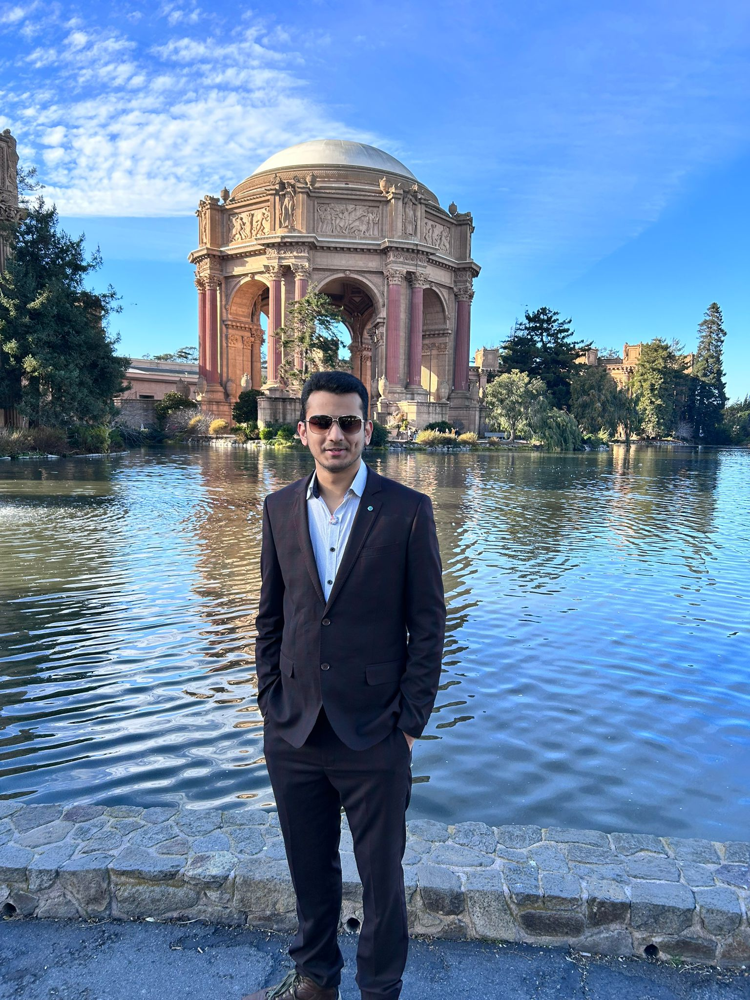
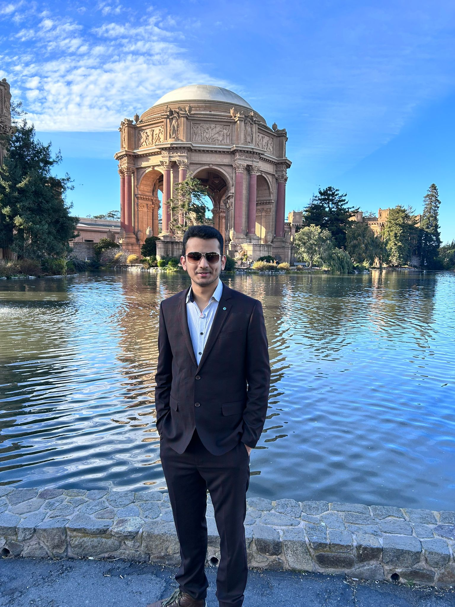
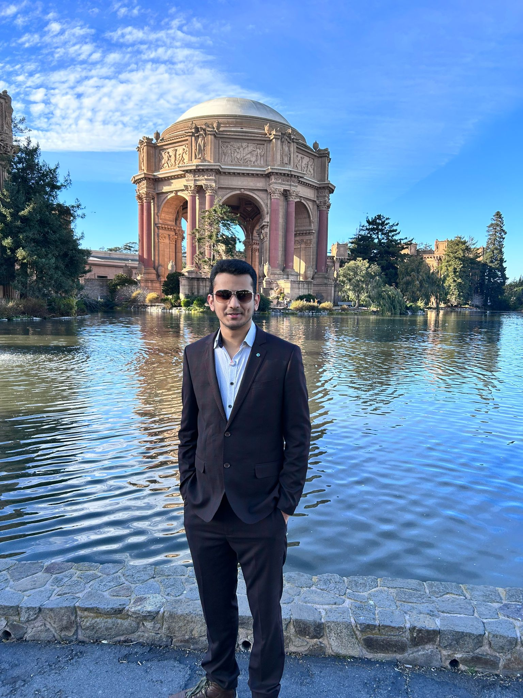

Anshaj Vats.
BS in Computer Science
San Francisco, California
9931633906vats@gmail.com
251-459-1826

Anshaj Vats.
BS in Computer Science
San Francisco, California
9931633906vats@gmail.com
251-459-1826
I am a passionate frontend developer with experience in HTML, CSS, and JavaScript. I enjoy creating intuitive and responsive user interfaces to enhance user experiences.
Frontend Developer
2018 - 2020